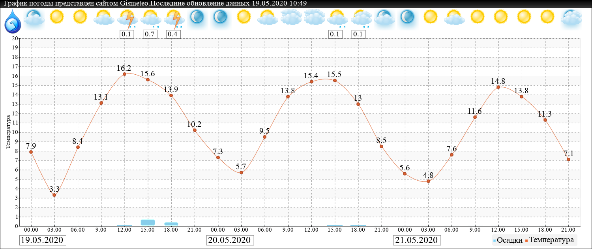

Вторник
Среда
Четверг
Пятница
Суббота
Воскресенье
Понедельник

1.2 мм.
0.2 мм.
5.4 мм.
0.2 мм.
21.5 мм.
0-3 м/c
2-4 м/c
2-5 м/c
2-4 м/c
1-4 м/c
3-6 м/c
2-3 м/c

| Дата | 19.05.2020 Вторник | 20.05.2020 Среда | 21.05.2020 Четверг | 22.05.2020 Пятница | 23.05.2020 Суббота | 24.05.2020 Воскресенье | 25.05.2020 Понедельник |
| T=Ощущается | от 3.3 до 16.2 | от 4.1 до 15.5 | от 2.9 до 14.8 | от 0.9 до 6 | от 2.9 до 8.2 | от -1.4 до 1.9 | от -0.9 до 12.4 |
| T=Воздуха | 11.1 | 11.1 | 9.6 | 5.7 | 6.7 | 3.9 | 8 |
| Иконка | | ||||||
| Давление | 742-743 мм.р.с | 740-742 мм.р.с | 743-746 мм.р.с | 745-748 мм.р.с | 749-752 мм.р.с | 741-754 мм.р.с | 755-759 мм.р.с |
| Влажность | 71% | 71% | 69% | 86% | 83% | 98% | 71% |
| Осадки | Дождь 1.2 мм. | Дождь 0.2 мм. | Нет осадков | Дождь 5.4 мм. | Дождь 0.2 мм. | Дождь 21.5 мм. | Нет осадков |
| Ветер | Юго-восточный 0-3 м/c | Северный 2-4 м/c | Северный 2-5 м/c | Северный 2-4 м/c | Северный 1-4 м/c | Северный 3-6 м/c | Юго-западный 2-3 м/c |
| Геомагнитное поле | Небольшие возмущения | Слабая геомагнитная буря | Слабая геомагнитная буря | Небольшие возмущения | Небольшие возмущения | Небольшие возмущения | Небольшие возмущения |